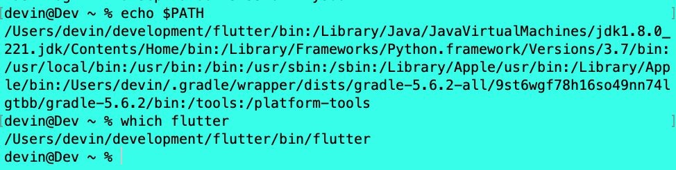
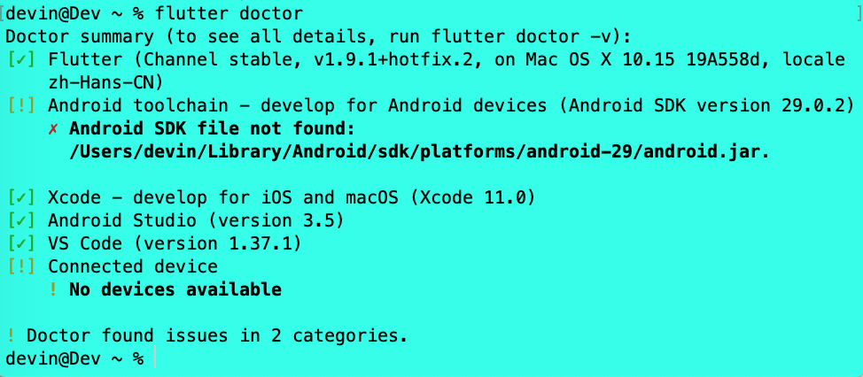
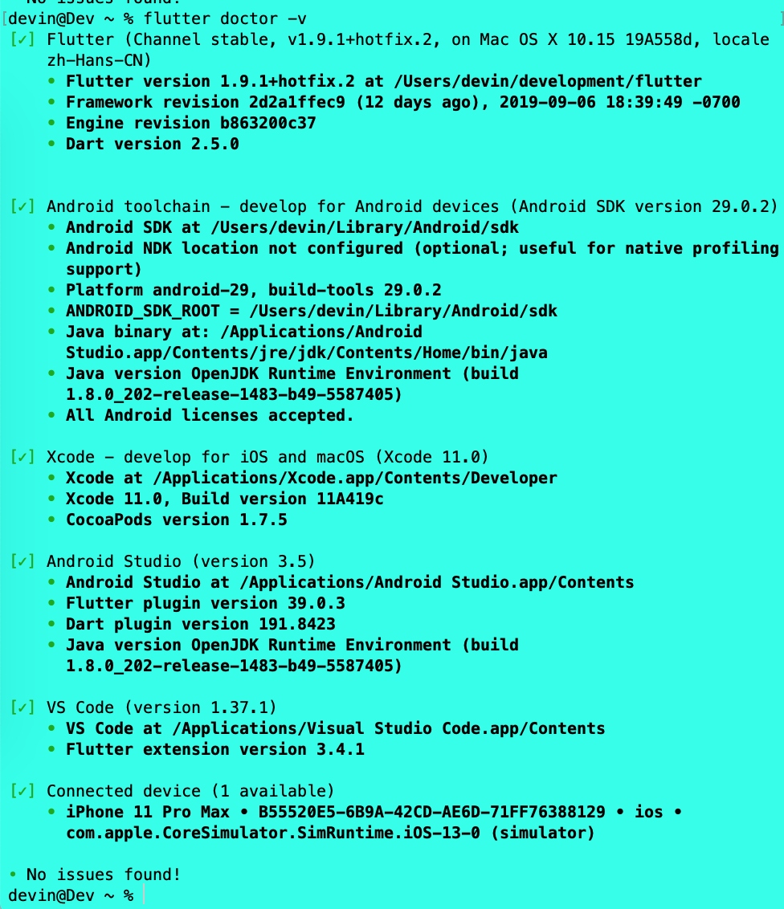

我们可以在 macOS，Linux 或 Windows 上进行 Flutter 开发。 虽然我们可以使用任何带有 Flutter 工具链 的编辑器，但是 IntelliJ IDEA，Android Studio 和 Visual Studio Code 的 IDE 插件可以简化开发周期。 我们将使用 VS Code。
1 - 下载 SDK
下载开发机器操作系统对应的安装包，以获取 Flutter SDK 的最新稳定版本。这里，我使用的是 Mac 操作系统:
- macOS Catalina
- 10.15 Beta版(19A558d)
1.1 系统要求
要安装和运行 Flutter，我们的开发环境必须满足以下最低要求:
- 操作系统: macOS(64位)
- 磁盘空间: 2.8 GB（不包括IDE /工具的磁盘空间）
- 工具: Flutter 依赖于您的环境中可用的这些命令行工具
- bash
- curl
- git 2.x
- mkdir
- rm
- unzip
- which
1.2 获取 Flutter SDK
1.2.1 下载以下安装包以获取 Flutter SDK 的最新稳定版本
我下载的是当前最新版本 flutter_macos_v1.9.1+hotfix.2-stable。
1.2.2 在目标位置提取文件
cd ~/development
unzip ~/Downloads/flutter_macos_v1.9.1+hotfix.2-stable.zip
1.2.3 将 Flutter 工具添加到我们的路径(PATH)
临时路径
export PATH="$PATH:`pwd`/flutter/bin"
此命令仅为当前终端窗口设置 PATH 变量。
永久路径
export PATH="$PATH:[PATH_TO_FLUTTER_GIT_DIRECTORY]/flutter/bin"
我们可以在命令行更新当前会话的 PATH 变量，如临时路径中所示。 但是，我们可能希望永久更新此变量，以便于我们可以在任何终端会话中运行 flutter 命令。
为所有终端会话永久修改此变量的步骤是特定于计算机的。通常，您会在打开新窗口时执行的文件中添加一行。
- 第1步: 确定放置 Flutter SDK 的目录。第 3 步需要用到。
- 第2步: 为你的 shell 打开或创建
rc文件。- macOS Mojave(及更早版本) 默认使用
Bash shell，因此编辑$HOME/.bashrc。 - macOS Catalina 默认使用
Z shell，因此编辑$HOME/.zshrc。 - 如果你使用的是其他 shell，则计算机上的文件路径和文件名将有所不同。
- macOS Mojave(及更早版本) 默认使用
第3步: 添加以下行并将
[PATH_TO_FLUTTER_GIT_DIRECTORY]更改为克隆 Flutter 的 git repo 的路径:export PATH="$PATH:[PATH_TO_FLUTTER_GIT_DIRECTORY]/flutter/bin"我的路径为:
export PATH="/Users/devin/development/flutter/bin:$PATH"第4步: 运行
source $ HOME /.<rc file>刷新当前窗口使rc文件立即生效，或打开一个新的终端窗口以自动获取文件。第5步: 通过运行以下命令验证
flutter/bin目录现在位于PATH中:echo $PATH通过运行以下命令验证 flutter 命令是否可用:
which flutter
1.2.4 可选操作: 预先下载开发二进制文件
Flutter 工具根据需要下载特定平台的开发二进制文件。可以通过运行以下方式提前下载iOS和Android二进制文件:
flutter precache
1.3 执行 flutter doctor 命令
运行以下命令以查看是否需要安装任何依赖项来完成设置（对于详细输出，请添加-v标志）:
flutter doctor
此命令检查您的环境并向终端窗口显示报告。 Dart SDK 与 Flutter 捆绑在一起; 没有必要单独安装 Dart。 仔细检查输出以了解可能需要安装的其他软件或执行的其他任务（以粗体显示）。
例如:  如图可知，我们需要安装的依赖项如下:
- Flutter SDK
- 我们已经通过之前的步骤安装成功。
- Android toolchain
- Android SDK 我们可以通过 Android Studio 的 SDK Manager 来下载安装，这里最新版本需要下载
android-29。
- Android SDK 我们可以通过 Android Studio 的 SDK Manager 来下载安装，这里最新版本需要下载
- Xcode
- 通过 AppStore 或者 苹果开发者网站下载即可。
- Android Studio
- Android Studio 官网下载即可。
- 需要在 Android Studio 客户端上安装
Flutter plugin和Dart plugin。
- VS Code
- Visual Studio Code 官网下载即可。
- 需要在 Visual Studio Code 客户端上安装
Flutter plugin和Dart plugin。
- Connected device
- iOS 可以通过执行
open -a simulator快速打开一个模拟器；Android 可以通过 Android Studio 打开一个 emulator。 下图表示所有依赖项安装完毕: 
- iOS 可以通过执行
至此，Flutter 的开发环境就搭建完成了，接下来，我们就可以进行 flutter 的开发了。